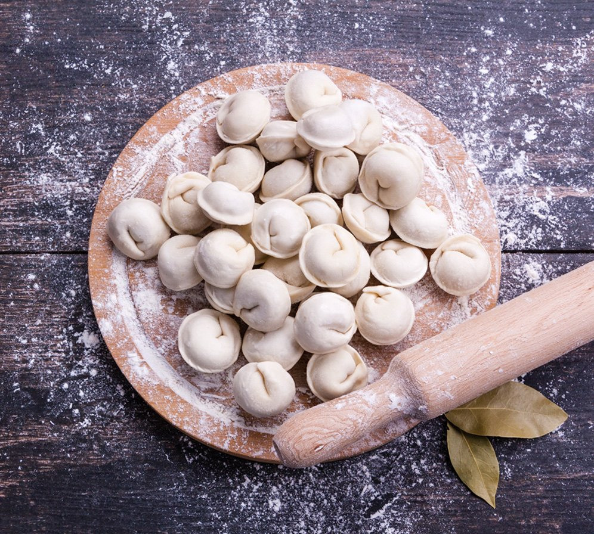

Пельмени
С мясом
Проектный сайт созданный по шаблону
Сайт описывает состав, способ приготовления и интересные факты о пельменях
Здесь вы можете получить много полезной информации про пельмени
Назад
Данный сайт создан для некоммерческого использования
Перейти на сайт ->